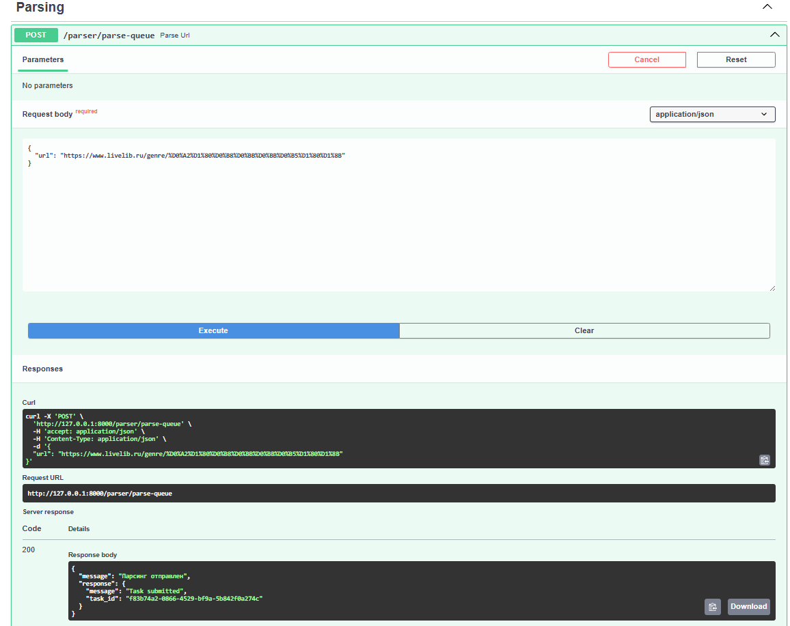
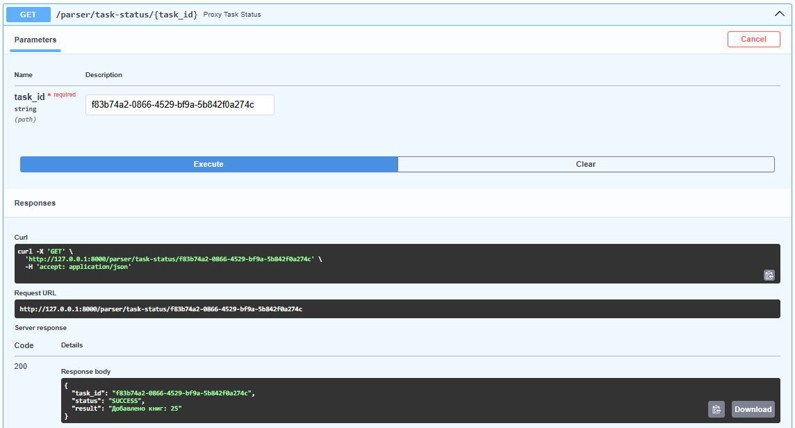
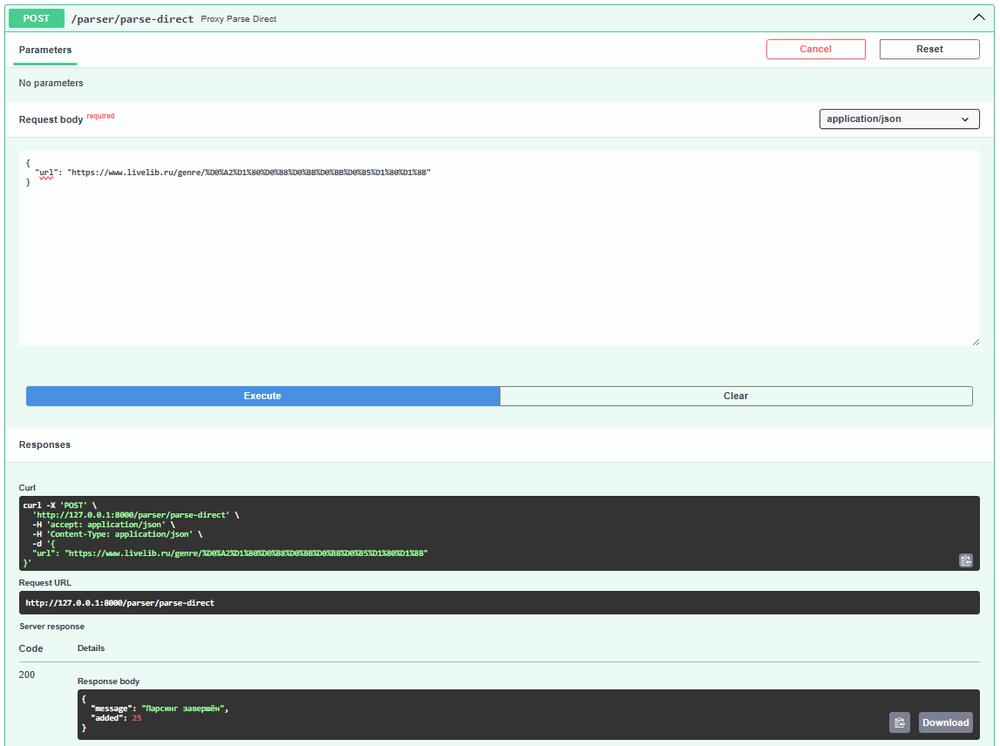

Упаковка FastAPI приложения в Docker, Работа с источниками данных и Очереди
Конфигурация
Dockerfile основного приложения (books)
FROM python:3.11
WORKDIR /app
RUN apt-get update && apt-get install -y netcat-openbsd
COPY requirements.txt .
RUN pip install --no-cache-dir -r requirements.txt
COPY . .
COPY wait-for-postgres.sh /wait-for-postgres.sh
RUN chmod +x /wait-for-postgres.sh
CMD ["/wait-for-postgres.sh", "uvicorn", "app.main:app", "--host", "0.0.0.0", "--port", "8000"]
В приложение books было добавлено 4 эндпоинта для общения с приложением
parser:
- отправка урла для парсинга напрямую
- отправка урла для парсинга через очередь
- получение статуса задачи по её id
- вспомогательная ручка для получения всех сохраненных через парсер книг
import httpx
from fastapi import APIRouter, Depends, HTTPException
from pydantic import BaseModel
from sqlmodel import Session, select
from app.db.session import get_session
from app.models.models import BookParsed
router = APIRouter()
class ParseRequest(BaseModel):
url: str
@router.post("/parse-queue")
async def parse_url(data: ParseRequest):
try:
async with httpx.AsyncClient() as client:
response = await client.post("http://parser:9000/parse", json={"url": data.url})
response.raise_for_status()
return {"message": "Парсинг отправлен", "response": response.json()}
except httpx.RequestError as e:
raise HTTPException(status_code=502, detail=f"Ошибка подключения к парсеру: {e}")
except httpx.HTTPStatusError as e:
raise HTTPException(status_code=e.response.status_code, detail=f"Ошибка парсера: {e.response.text}")
@router.get("/task-status/{task_id}")
async def proxy_task_status(task_id: str):
try:
async with httpx.AsyncClient() as client:
response = await client.get(f"http://parser:9000/task-status/{task_id}")
return response.json()
except Exception as e:
raise HTTPException(status_code=502, detail=f"Ошибка при обращении к парсеру: {e}")
@router.get("/parsed-books")
def get_parsed_books(session: Session = Depends(get_session)):
books = session.exec(select(BookParsed)).all()
return books
@router.post("/parse-direct")
async def proxy_parse_direct(data: ParseRequest):
try:
async with httpx.AsyncClient() as client:
response = await client.post("http://parser:9000/parse-direct", json={"url": data.url})
response.raise_for_status()
return response.json()
except httpx.RequestError as e:
raise HTTPException(status_code=502, detail=f"Ошибка подключения к парсеру: {e}")
except httpx.HTTPStatusError as e:
raise HTTPException(status_code=e.response.status_code, detail=e.response.text)
Dockerfile приложения parser
FROM python:3.11
WORKDIR /app
COPY requirements.txt .
RUN pip install --no-cache-dir -r requirements.txt
COPY ./app ./app
CMD ["uvicorn", "app.main:app", "--host", "0.0.0.0", "--port", "9000"]
celery_worker.py - использует redis в качестве брокера задач и бэкенда, запускает
асинхронный парсинг урла
from celery import Celery
import asyncio
from .parser import async_parse
celery_app = Celery(
"parser",
broker="redis://redis:6379/0",
backend="redis://redis:6379/0"
)
@celery_app.task
def parse_url_task(url: str):
count = asyncio.run(async_parse(url))
return f"Добавлено книг: {count}"
В приложении parser есть 3 эндпоинта: добавление задачи в очередь, получение
статуса задачи по её id и прямой парсинг урла:
from celery.result import AsyncResult
from fastapi import FastAPI, HTTPException
from pydantic import BaseModel
from .celery_worker import parse_url_task, celery_app
from .parser import async_parse
app = FastAPI()
class URLInput(BaseModel):
url: str
@app.post("/parse")
def trigger_parse_task(data: URLInput):
if not data.url.startswith("http"):
raise HTTPException(status_code=400, detail="Invalid URL")
task = parse_url_task.delay(data.url)
return {"message": "Task submitted", "task_id": task.id}
@app.get("/task-status/{task_id}")
def get_task_status(task_id: str):
task = AsyncResult(task_id, app=celery_app)
return {
"task_id": task.id,
"status": task.status,
"result": task.result if task.successful() else None
}
@app.post("/parse-direct")
async def parse_direct(data: URLInput):
try:
count = await async_parse(data.url)
return {"message": "Парсинг завершён", "added": count}
except Exception as e:
raise HTTPException(status_code=500, detail=f"Ошибка парсинга: {e}")
docker-compose.yml конфигурирует все необходимые контейнеры и их зависимости:
- books - основное приложение, зависит от db
- parser - микросервис, зависит от db и redis
- worker - обработчик задач из очереди, получает задачи из Redis, зависит от parser, redis, db
- redis - брокер очередей и хранилище результатов Celery
- db - PostgreSQL база данных, используется обоими приложениями, сохраняет данные между перезапусками через pgdata
version: '3.8'
services:
books:
build:
context: ./books
container_name: books
ports:
- "8000:8000"
depends_on:
- db
env_file:
- ./books/.env
parser:
build:
context: ./parser
container_name: parser
ports:
- "9000:9000"
depends_on:
- db
- redis
env_file:
- .env
worker:
build:
context: ./parser
container_name: parser-worker
command: celery -A app.celery_worker.celery_app worker --loglevel=info
depends_on:
- parser
- redis
- db
env_file:
- .env
redis:
image: redis:7
container_name: redis
ports:
- "6379:6379"
db:
image: postgres:15
container_name: postgres
restart: always
env_file:
- .env
ports:
- "5432:5432"
volumes:
- pgdata:/var/lib/postgresql/data
volumes:
pgdata:
Эндпоинты
Отправка урла на парсинг через очередь

Просмотр статуса задачи по id

Отправка урла на парсинг напрямую
